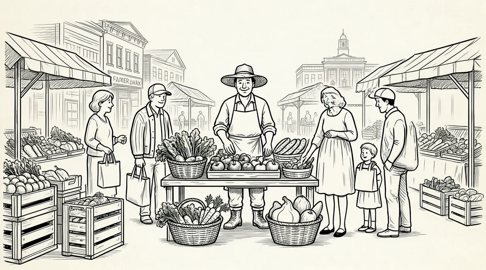

第55章 凯瑟琳的最后一次聚会

巴菲特在医院进行结肠手术的时候，网络泡沫已经平息。网络风暴之下兴起的公司日渐消退：Arzoo.com、Boo.com、Dash.com、eToys.com、Flooz.com、FooDoo.com、Hookt.com、Lipstream.com、PaperFly.com、Pets.com、Wwwwrrrr.com、Xuma.com、Zing.com。1纳斯达克交易量跌破峰值的一半，不过旧经济股依然没有复苏。美联储又一次开始降低利率。然而，巴菲特的名声开始恢复了。
伯克希尔–哈撒韦在资本市场大桶淘金，巴菲特开始并购一系列私营公司、破产公司和侥幸生存的公司，又一次大开投资之窗。他并购了意外风险保险公司——美国债务公司，珠宝商本·布里奇珠宝公司2，Acme砖业公司、托尼·拉马皮靴公司，以及Nocona靴业公司的母公司贾斯汀工业3，全球最大的地毯制造商Shaw实业集团4，本杰明·摩尔油漆工业公司5，家居建材产品制造商杰斯曼公司6，高科技复合钢制造商Mitek公司7。尽管如此，2000年年末，伯克希尔–哈撒韦依然拥有数十亿美元的闲置资本：地下室堆满了钱、椽子上挂满了钱、墙上贴满了钱、烟囱里塞满了钱、屋项上铺满了钱——大量金钱源源不断地从这台永不生锈的“现金机”中吐出。8
巴菲特在1999年太阳谷年会的演讲中对市场进行的预言目前已经得到证实。2000年他在致股东的信中宣称互联网的诞生对玩世不恭的金融家是一次机会，让他们有机会向容易上当的人们“出售希望”——巴菲特一年一度致股东的信已经演变为全球媒体盛事，通过互联网发布，成千上万的网民急切期待，所以每逢那个星期六早上，伯克希尔–哈撒韦的网站都会因流量过大而濒临崩溃。他又一次委婉地提到他在太阳谷演讲中引用的伊索寓言：投资互联网就是放飞到手的鸟儿（眼前的钱）去捉林子里的鸟儿。“财富大规模转手”的结果就是只有少数人获利。
“通过无耻地宣传空洞的利润，组织者近年来将数十亿美元从公众的腰包里抢走，肥了自己的腰包（以及他们的亲戚、朋友的腰包）……投机变得非常容易的时候就是最危险的时候。”9观众都在听巴菲特的发言，这是2001年的股东大会，参会人数又多了起来。
伯克希尔–哈撒韦的部分好运源自吉列公司的经营状况好转，巴菲特曾帮助吉列完成从迈克·霍利任首席执行官到吉姆·基尔兹上任的过渡。10在此之前不久的2000年年末，巴菲特一改以往事不关己高高挂起的作风，在可口可乐新上任的首席执行官道格·达夫特准备并购桂格燕麦的时候，作为董事会成员出面阻止了那次并购。巴菲特是董事会成员中少数几位有决议权的董事。可口可乐新上任的首席执行官是否可以创造一番成绩还有待时间去见证，当然，换汤不换药不会对股价带来什么正面的影响。
巴菲特2001年参加太阳谷年会是又一次重磅出击。但是，湾流豪华公务机沿山形滑翔降落到黑利机场后，纷纷奔向太阳谷酒店的公司高管们都心事重重。谣言正在四处漫延，多数谣言是关于AT&T还击康卡斯特电信公司对电缆产品的恶意出价的。
太阳谷酒店前面的草坪上第一次支起了密密麻麻的电视新闻采访棚，似乎那里在拍电影：闪光灯、反射板、制片人、摄影师、助理、化妆师和记者全部到位，全副武装准备采访各位首席执行官。就是这些记者们助长了谣言的四处传播。达克庞德的摄像机从来没有停止工作，发言过后记者们不顾发言人的情绪疯狂拍照。他们追着采访自己认为与相关事件有关的公司人员。
星期五下午，84岁的凯瑟琳·格雷厄姆玩儿了一会儿桥牌后想安静一下，就开着那辆小型高尔夫球车回到她的公寓——她一直喜欢开着高尔夫球车在太阳谷各处走动。凯瑟琳个头很高，身材苗条，两臀都做过手术，走起路来有点儿不协调。人们注意到她有些疲劳，精神欠佳，但是她一直说今年的年会是自己最开心的时候。她和儿子唐共同经营的公司得到巴菲特的指点，在报业利润急剧下滑的时候，该报因在财务方面和新闻报道方面的成功居然成为公认的行业偶像。凯瑟琳总是非常高兴看到许多她喜欢的人齐聚到艾伦会议中心。人们事先为她安排了一位随行助理，但是她性格刚毅坚决反对，所以大部分时间不是唐就是巴里·迪勒搀扶着她（美国网络公司董事长巴里·迪勒是她的好朋友）。然而，此时此刻她却是一个人。
苏茜和母亲在车里看到了凯瑟琳，就把车开到了员工停车场。凯瑟琳没看到她们，但是她们可以看着凯瑟琳走上通向公寓的四个台阶。那段时间凯瑟琳在服用抗凝血药物，如果摔倒极有可能引起出血。她们看到她靠着栏杆，有点儿发抖，所幸站在栏杆内侧才没有摔倒。11
在“野花公寓”的露天平台上，就是面朝高尔夫球场和山脉的凯瑟琳·格雷厄姆下午时分经常坐在那里浏览《华盛顿邮报》的平台上，时装设计师黛安娜·冯·弗斯腾伯格为凯瑟琳特别举办的年度女士鸡尾酒会照例进行，这场鸡尾酒会已经成为太阳谷的一大传统。苏茜带来了喜诗棒棒糖，大家都围着凯瑟琳拍照，嘴里含着棒棒糖。12过了一会儿，唐纳德·基奥以及黛安娜的丈夫巴里·迪勒、新闻集团的首席执行官鲁珀特·默多克和其他几位男士猛然走进聚会，唐·格雷厄姆也在其中。
星期六破晓时分，大家纷纷坐在椅子上等待英特尔的总裁安迪·格鲁夫首先发表关于“网络稳定性”的主题演讲。随后，黛安娜·索耶主持召开座谈会，依次邀请eBay的梅格·惠特曼、索尼的首席执行官霍华德·斯特林格先生和美国在线–时代华纳的史蒂夫·凯斯谈一谈关于“美国的脉搏：我们如何去寻找”这一问题。太阳谷此时的情景仿佛中学里的自助餐厅，记者们用摄像机记录了这一刻，他们一致传出谣言声称美国网络公司或美国在线–时代华纳、迪士尼、有线电视服务公司或者所有这些公司将与AT&T有线电视及宽带部门联手。13在座的许多人都希望那些电视棚消失。
黛安娜·索耶主持的座谈会结束后，接下来发言的照例是巴菲特。2000年3月的市场高峰过后，股票市场损失逾4万亿美元。14网络公司的失业人数至少达112000人。15同时，幸存的互联网公司也进入了青春期。有人非常肯定地推测，巴菲特不会再认为网络股依然被高估。人们希望巴菲特不像以前那样悲观，可以变得宽容一点儿。
然而，巴菲特向在座的人展示了一幅曲线图，说明市场价值依然高于实际经济水平的1/3。这显然远远高出巴菲特认为可以买进股票的标准，而且也是现代历史上的市场巅峰时期——胜过1929年那场严重的市场泡沫。实际上，巴菲特的曲线图表明目前的经济水平虚高几近一倍，或者可以理解为市场价值依然会下跌一半。16他告诉人们尽管市场经历两年严冬，尽管纳斯达克交易量跌了超过一半，他还是不会买进。他预期的股票市场（包括红利在内）的年均增长只能达到不足7%的水平，而且可能在未来20年持续如此。177%的预期数字只比他在两年前的预期高出一个百分点。这是令人沮丧的消息，尤其是对巴菲特本人——71岁生日庆祝在即——而且对他希望保持的以往的纪录也没有什么积极作用。
“这不应该是市场的情况。”他说，“但是，这就是市场目前的情况，而且还是人们应该牢记于心的。”他接着通过幻灯片打出这样一句话：
不能持久的事物终将灭亡。
——赫布·斯坦18
在座的许多人一脸严肃、深受震惊——但是都记住了他的一席话。“人们还是得听巴菲特的。”亚马逊的首席执行官杰夫·贝佐斯说。亚马逊公司的股价从兴盛时的每股113美元下跌到每股17美元。“他讲的一些事情确实让人痛心，但是，上帝做证，他就是一个精灵，从来都是正确的。”19
巴菲特的一席演讲引来众多恭维，午餐时分，就在赫伯特·艾伦公寓后面的帐篷下面人们纷纷对他表示祝贺。大概有100人参加了这次午餐聚会，格雷厄姆母子也在其中。巴菲特和墨西哥总统比森特·福克斯坐在一起——他认为福克斯是一位“资深的可口可乐人”，而且对经济有着深刻的见解。20后来，巴菲特又去打高尔夫球。
凯瑟琳·格雷厄姆开着她的高尔夫球车到桥牌室玩牌。过了一会儿，她说有点儿不舒服，要回自己的房间去。她打电话告诉助理她要回去了，她的助理就留在赫伯特·艾伦的公寓等她，而她的公寓就在隔壁。然后，她一个人走向高尔夫球车，独自开着车返回公寓。
她的助理隔几分钟就向窗外望一次。终于，助理看到凯瑟琳的高尔夫球车到了，但是凯瑟琳已经下了车，于是助理飞快地跑出去，结果看到凯瑟琳倒在了公寓门前靠近走廊的台阶上。助理冲过去，弯下腰和凯瑟琳说话，但是没有任何反应，于是开始大声叫赫伯特·艾伦出来。21几分钟后，急救人员赶到的时候，唐·格雷厄姆也急匆匆从高尔夫球场返回。他需要有人帮忙一起面对母亲的突发病情，就要求巴菲特同去医院。但是巴菲特承受不了这种悲伤的情绪。22于是格里菲思·哈什，一位优秀的神经外科医生——eBay首席执行官梅格·惠特曼的丈夫，和唐一起去了距离只有10分钟车程的、位于凯彻姆的圣路克斯医院，以帮助诊断CAT检查结果。23
苏茜开着车去医院陪唐和赫伯特·艾伦，她非常清楚谁也指望不上她的父亲来帮助面对什么危急病情。1997年，医生诊断说苏珊需要做心导管插入手术，巴菲特就坐飞机到旧金山陪她。而中途凯瑟琳·科尔打电话说苏珊没事了，巴菲特就直接返回了奥马哈。后来，苏珊因剧痛难忍的腹腔粘连和肠梗阻多次进入急救室，1999年还接受了胆囊摘除手术，然而那些年苏珊每一次入院，巴菲特都不能克制自己的悲伤情绪到医院好好陪一陪她。24
哈什医生和唐到圣路克斯医院不多一会儿，放射科医生就拿来了CAT扫描报告，哈什医生看后说：“凯瑟琳需要到创伤科治疗。”圣路克斯医院很快通过直升机把凯瑟琳送到博伊斯的圣艾尔奉萨斯地区医院；赫伯特·艾伦安排了一架私人飞机——空间只比割草机稍大一点，由两位穿着牛仔裤和T恤的年轻人驾驶——把唐和苏茜送到了博伊斯。
这一切发生的时候，巴菲特悄悄回到了自己的公寓。那天苏珊早早就离开了，去希腊参加一个婚礼，对这儿发生的一切一无所知。彼得和珍妮弗、豪伊和德文还在太阳谷，彼得和豪伊只是路过。然而每次在这样的时候，巴菲特都不会自然调整自己的悲伤情绪，和儿子们直率地沟通。沙伦·奥斯伯格不在太阳谷，当然阿斯特丽德也不在。妻子和女儿此时同样不在身边，于是盖茨夫妇、罗恩和简·奥尔森还有苏茜的男朋友陪着巴菲特等待凯瑟琳的治疗情况的消息。大家的任务就是和巴菲特随便闲聊，帮助他分散注意力，而且闲聊的时候都避免提到凯瑟琳。苏茜从博伊斯打来电话告诉巴菲特，凯瑟琳马上要进行手术了，但是没有别的消息。25
凯瑟琳进了手术室，不久手术结束。大概午夜时分，哈什医生告诉唐和苏茜情况不太好，凯瑟琳需要再进行一次CAT扫描检查。他们把病床推进了手术室，把凯瑟琳的手表交给了苏茜，苏茜觉得心里猛地震动了一下。26
大约凌晨两点，由于一直没有更多消息从博伊斯传来，巴菲特决定去休息。其他人也都离开了房间。
大概90分钟后，医生们把凯瑟琳推到重症监护病房。“我们真的无能为力了。”他们说。苏茜打电话叫醒了父亲，她告诉父亲召集大家坐飞机到医院去。巴菲特于是叫醒了大家，组织大伙儿出发。
几小时后，飞机在博伊斯落地，巴菲特打电话给苏茜说他觉得自己去不了医院。苏茜对父亲说必须到医院去，唐非常难过，需要他到医院去，即使凯瑟琳没有意识，看不到他，也会感觉到他的到来。巴菲特勉强同意前去。
到了医院后，女儿在楼下的走廊里等巴菲特。她知道此时的父亲非常难受，必须有人耐心地帮助他面对眼前的一切。“您必须上去，”她坚持说，“您必须去的。”她带着父亲来到了重症监护病房，病房里唐·格雷厄姆孤独地坐在那里陪着母亲，通红的脸上挂满泪水。凯瑟琳面色苍白，没有一点儿意识，身体连着许多监视仪器，监视仪器不时闪烁出点点亮光，发出轻微的响声。凯瑟琳的嘴上戴着氧气罩。巴菲特和唐紧紧拥抱，两人都呜咽着。随后拉利·韦茅斯——凯瑟琳的长女也是唯一的女儿来了。最后，苏茜陪着父亲来到楼下。凯瑟琳的病房此时不需要他们。凯瑟琳的孩子们陆续来到博伊斯后，巴菲特父女就坐着飞机，带着悲伤的情绪回到了奥马哈。27
两天后，他们接到电话得知凯瑟琳去世了。巴菲特事先就和拉利说过他不能在凯瑟琳的葬礼上发言，他愿意和比尔·盖茨一起做迎宾人员。在家里，阿斯特丽德照顾他的生活起居；在办公室，他就不停地工作。不工作的时候，沙伦和他一起打桥牌，或者玩电脑直升机游戏，再或者做一些其他事情，以减轻凯瑟琳的去世带给他的震惊和恐惧。那么突然、在那么一个欢乐的场合；事发的时候他不在场；救护车、直升机、苏茜打电话讲述手术的事情；坐在公寓里等候，午夜电话响起，一路紧张地飞往博伊斯；在病房看到凯瑟琳静静地躺着，面色苍白，呼吸微弱；控制力很强的唐·格雷厄姆当时那么无助；离开从此永别的凯瑟琳飞回家时的一路痛苦；电话得知她去世了；苏珊一直不在他身边。再也见不到凯瑟琳了，再也没有凯瑟琳的聚会了，永远没有了。
然而，凯瑟琳·格雷厄姆去世后的第二天，巴菲特还是按照计划来到佐治亚大学特里商学院进行了一次演讲。他穿着笔挺的灰西服走上台，看起来有些不太自然，声音略带嘶哑。“现在试音，100万、200万、300万。”他对着麦克风说。这样的开场往往会引起台下一片笑声，今天也不例外。而不同以往的是，他又讲了几个内布拉斯加的足球笑话，引得观众咯咯直笑。
随后，他转入正题。“人们总会问我应该选择什么样的工作，我就说要为自己最崇拜的人工作。”他奉劝大家不要浪费时间和生命，“只是因为有人看好你的简历就频繁跳槽是不理智的做法，就像老了才去考虑两性生活一样。做自己喜欢的工作，为自己最崇拜的人工作，就是为自己创造了最佳机会。”
大家问他曾经犯过哪些错误。他说首先就是伯克希尔–哈撒韦花了20年时间努力复兴一个破败的纺织工厂。其次是美国航空，巴菲特提到他拨打航空公司热线没有接通的事情。第三就是年轻的时候一直在想办法买进辛克莱尔加油站。他算了算，那次错误带来的损失有60亿美元，就是说，他投入的那些钱完全可以用来赚到60亿美元。
但最折磨人的错误还是那些本该去做而没有做的事情，他告诉大家，而且只提了一件这样的事情——没有买FNMA的股票，FNMA即联邦国家房贷协会。他说目前为止这项投资失误引起的损失达50亿美元。其实还有其他的：错过了汤姆·墨菲曾竭力要卖给他的电视台，没有投资沃尔玛。他解释说，没有抓住机会，错过了本该去做的事情就是因为自己向来谨慎从事。
巴菲特此前也多次提到过自己的错误，但是，在提到那些本该去做而没有做的事情之时，从不涉及工作之外的事情。个人生活中这样的错误——疏忽遗漏、坐失良机——同样时有发生，也是压力带来的副作用，但只有非常了解他的人才会知道这些，他只是偶尔与他们提及自己的这些错误。
他向学生们解释了投资的“20个孔眼”法。他说：“假设你的一生有这样一张卡，上面可以打20次孔，一次财务决策打一个孔，这样你就会努力抗拒各种诱惑，不草率行事，并能做出一个个明智的重大决策，从而变得非常富有。”
他自己的生活就是这样，变数极少。一栋房子，与妻子相伴50年（后来一直与法纳姆大街的阿斯特丽德相伴），对买卖房地产、艺术品、车辆和其他财富都没有兴趣，没有频繁辗转于各地，也没有在职业生涯中变幻无常。这部分是个性使然，还有就是习惯使然，也是诸多事情自然发展的结果和一种惯性形成的智慧。有幸成为他的朋友便是他一生中永远的朋友，任何破坏这种永恒的事情都让他无法面对。
几天后，警察一早就开始对华盛顿国家大教堂附近的街道实施戒严，因为教堂要举办重要的活动，这一天大教堂在蓝天的映衬下格外壮观。28电台工作人员开始忙着拍摄这次乐队参与的重大活动，乐队的服饰是参加国家元首葬礼的着装。上午时分，接送《华盛顿邮报》员工的几辆客车先后到了，接送参议员的蓝白条相间的客车也到了，从小汽车和高级轿车上下来的人纷纷涌入大教堂。教堂的前排坐满了显要人物，有比尔·克林顿和希拉里·克林顿、琳恩·切尼和迪克·切尼。教堂里无处不是知名人物：最高法院法官鲁思·巴德·金斯伯格和斯蒂芬·布雷耶，知名记者查理·罗斯、汤姆·布罗考、迈克·华莱士和特德·科佩尔，《今日美国》的阿尔·纽哈思，美联储主席艾伦·格林斯潘和他的妻子，编辑蒂娜·布朗，参议员特德·肯尼迪，国会代表伊兰诺·霍姆斯·诺顿。29成百上千人随着国家交响乐团和肯尼迪艺术中心歌剧厅乐团的铜管重奏列队穿过巨大的铜门进入教堂，这次聚会是该教堂有史以来接待人员最多的一次。30
从教堂中殿那边起，站着几千名穿着黑色西服和白色衬衫的男士，形成了蒙德里安式的背景幕，他们的前面是身着黑白方格衣服的女士们。有的女士穿着犬牙花纹的衣服和卷曲的泡泡纱；有的身着一袭精致黑色套装，配着白色棉衬衣；有的穿着无袖紧身连衣裙，或者穿着小外套，或者索性裸露着手臂；有的穿着白色的裙子和黑色的毛衣；有的穿着黑色的夹克衫和点缀着瑞士风格的黑白斑点的裙子。她们戴着黑色的小帽子，编织得非常精心，黑色的草帽上配着一层向下倾斜的面纱，非常符合阿斯科特城女士日的气氛。大教堂成了珍珠的海洋，有的小如芝麻，有的大如瓶塞。女宾们有的手腕上、脖颈上、耳垂上镶嵌着大小各异的黑白珍珠，有的佩戴着长串珍珠。每一个细节都是为了表示对一位女士的悼念，她让世界敬畏多年，对她一生的总结和悼念已然成为一次最为盛大的、全国性的、最后的黑白舞会。
追思仪式开始后，巴菲特和盖茨悄悄在梅琳达旁边的长凳上坐下。音乐响起，历史学家阿瑟·施莱辛格首先发言，而后发言的是亨利·基辛格、本·布拉德利和凯瑟琳·格雷厄姆的孩子们。最后，前议员约翰·丹福斯布道，他认为尽管凯瑟琳·格雷厄姆从来没有对宗教进行过多少评价，但是她的生活方式犹如一位信徒。“她是全球公认的最强势的女性，但是她自己没有这样认为。”他说，“特别是在华盛顿，许多人趾高气扬，但是凯瑟琳没有……自私不能战胜生活，成功属于献身于事业的人们。‘满招损，谦受益’，现实确实如此。这是我们每个人应该学习的一课，而凯瑟琳·格雷厄姆给我们上了生动的一课。”
巴菲特带着一脸悲伤挨着盖茨坐下后，梅琳达伸手擦去了眼泪。穿着黑白长袍的两支教堂唱诗班唱着莫扎特的曲子。抬棺的人小心地抬起棺材，沿着走廊走去，大家一起唱着《美丽的亚美利加》。家人跟着走出大教堂，来到与凯瑟琳·格雷厄姆的住房隔街相望的橡树丘墓园，她将与已故的丈夫一同埋葬在这里。
下午早些时候，400多人坐车绕环形公路来到了凯瑟琳·格雷厄姆的住处，纷纷走进后花园，她的孩子们和孙子们都站在那里接待客人。在帐篷里的自助餐会中有三明治、切片火腿和里脊肉。人们绕过游泳池来到房子里追忆这里曾经发生过的点点滴滴。人们在里根总统曾弯腰捡起自己散落的冰块的客厅里驻足；最后一次凝视图书室的书籍和饰物，格雷厄姆曾坐在这间图书室里斟酌是否报道五角大楼文件；人们在金色餐厅圆桌旁边的墙上摆放的拿破仑时代的瓷器前驻足，这间餐厅曾经接待过从肯尼迪时代到克林顿时代的历任美国总统。从杰奎琳·奥纳西斯到戴安娜王妃，只要是凯瑟琳·格雷厄姆发出邀请，他们一定赴约。31这座房子本身就代表着一段历史。
巴菲特最后一次环视凯瑟琳的房子，记住了这里的一切，但是他没有久留，早早地就离开了凯瑟琳的房子，而且永远不会再回来了。32
下午的时间慢慢过去，凯瑟琳·格雷厄姆的朋友们和仰慕她的人们开始慢慢散去。人们依依不舍地走过长廊，走过她生前经常宴请朋友的房间，走过花园……缓缓地，极不情愿地告别最后一次凯瑟琳的聚会，最后一次踏上通向停车场的铺满石子的小路。